Interactive Web GIS for Cholera Spatial Epidemiology: Case of 2017-2018 Cholera Outbreak in Karonga district: MALAWI
1. MOBILE SPATIAL EPIDEMIOLOGY DATA CAPTURE
Mobile Global Positioning System (GPS) receivers such as phones can be used to generate real time public health data. The user testing analysis of the ESRI collector based on built-in functions showed its potential in spatial and attributes capture for 2017 – 2018 cholera outbreaks in Karonga district. Spatial data dimension analysis, shows that ESRI collector can capture coordinates up to the average minimum accuracy of 3.3m. The collector demonstrates its capability in mapping waypoints for 2017 -2018 cholera case in Karonga district (Figure 1). The configuration process indicated its attractive features such as collect a new feature icon, measure distance and area functions, search bar, bookmarks and others. The configuration process shows that the file geodatabase for ESRI collector built in ArcMap 10.6 can be created using different domain name with the description extension. The domain name can be set in different properties by choosing appropriate field type such as text, short integer, long integer, float, double and date. The geodatabase for ESRI collector can also be set with unique coded values. The configuration process demonstrates that after creating all required attribute domains, feature classes can be added to the geodatabase. The application demonstrated its online and offline field data acquisition and online data syncing into ArcGIS geo-server. The configuration process of ESRI collector allows photo-tagged data capture and data syncing. Field observations show that texts for the collector were readable, can be in upper or lower case and allows scrolling of text, numeric and date option. The application works with an authority permitted by ESRI through ArcGIS online organization account. Cholera cases for 2017 – 2018 were collected by ESRI collector using mulanje1 account for UNICEF Malawi. Field observations show that collector application is user friendly with easy to understand, operate and navigate. It is reliable application with easy to remember its organization link, speed download, data sync function and its measuring efficiency. The collector allows for data update such as editing. Figure 1 shows the application’s configuration process, spatial data capture capability and mapped waypoints.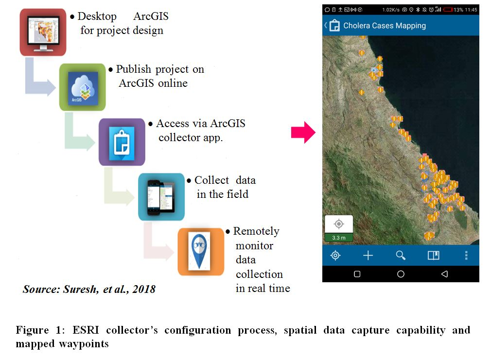
Figure 1: Esri collector’s configuration process, spatial data capture capability and mapped waypoints
2. SPATIAL RISK FACTORS DEPENDENCY WITH DISTRIBUTION PATTERN OF CHOLERA CASES
2.1. Distribution of Cholera Cases
The spatial distribution of 2017-2018 cholera outbreak, shows that the outbreak hits mostly the eastern part of the district. The linear distribution pattern that follows the surface water of Lake Malawi, Songwe river, Lufira river, North Rukuru river and Wovwe river. Figure 1 shows the spatial distribution of 2017-2018 cholera cases.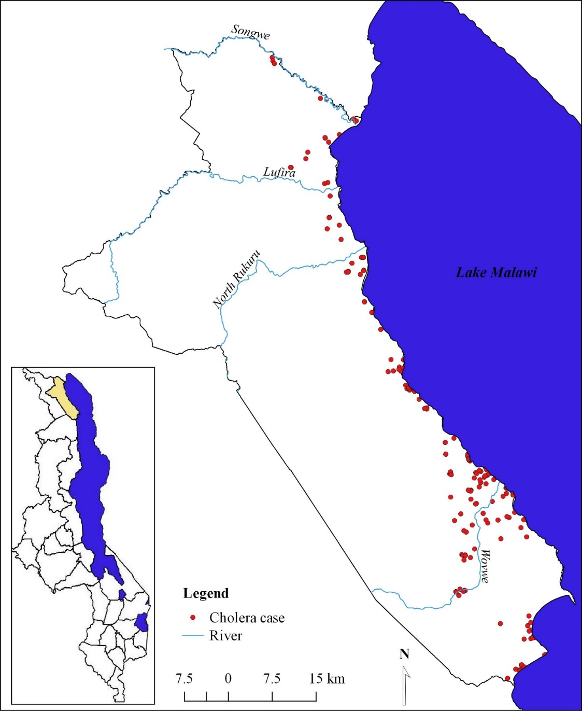
Figure 1: Distribution pattern of 2017-2018 cholera cases: Karonga district
2.2. Spatial dependency of cholera incidence and elevation
Figure 2 shows the results of Moran’s I calculation and its statistical significance for cholera prevalence in association with elevation. The spatial autocorrelation (Moran’s I) statistical analysis shows a positive and statistically significant spatial autocorrelation for dissimulative incidence rate of cholera cases from lower elevation interval to high elevation interval (Moran's Index = 0.714228, p-value = 0.000000). The p-value shows a strong clustering pattern of cholera incidence and change of elevation which clustering of high rates of cholera cases at the low lands part of Karonga district.
Figure 2: Spatial Auto-correlation for cholera incidence and Elevation
Given the z-score of 10.3803954895, there is a less than 1% likelihood that this clustered pattern could be the result of random chance. The spatial relationship based of the counts of cholera cases within defined elevation interval was plotted. The relationship shows that high cholera cases were registered in low lands with elevation less than 300m altitude and low cholera cases in high lands with elevation interval of 601m – 900m altitude. Figure 3 shows the relationship between change of elevation and rates of cholera cases.
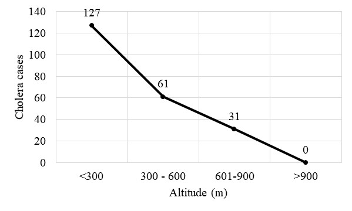
Figure 3: Relationship between elevation interval and number of cholera cases
2.3. Proximity analysis of cholera cases from surface water
Evaluating the clustering of cholera cases homes for fixed distance buffer in reference to surface water sources was typically implemented using count statistics for numeric fields. The proximity analysis based on distance of patients homes to the surface water shows that the majority (count: 90) of cholera cases are within < 0.5km buffer. Of 129 spatially collected cholera cases, 42, 37, 14, 13 cholera cases and within 0.5 – 1km, 1.1 – 1.5km, 1.6 – 2km and 2.1 – 2.5km buffer respectively. The proximity analysis based of fixed distance buffer shows that as the offsite distance increases from the surface water, the number of cholera cases decrease. However, the proximity analysis validates spatial auto-correlation which shows an offsite decrease of cholera cases from the surface water source. Figure 4 shows the association of elevation and cholera prevalence in Karonga district.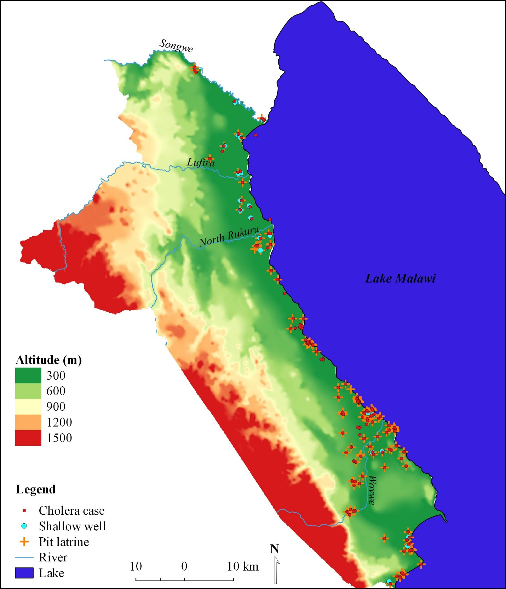
Figure 4: Spatial Association of Elevation and 2017-2018 cholera prevalence
2.4. The role of elevation on the flow direction of microbiological contaminants of surface water source associated with pit latrine
Figure 5 shows the results of the flow direction analysis of microbiological contaminants from temporary pit latrines in reference to elevation levels. Using hydrology analysis tool for ArcGIS based on flow direction, indicates that microbiological contaminants (bacteria) from pit latrines flow in eastern direction towards low lands of Karonga district. A total sum of 341378 pixels flow direction, 212979 pixels show flow direction towards the surface water source of Lake Malawi, Wovwe river and Songwe river. The topography of the district has cumulative water points in the high lands in which 128399 flow direction pixels converge. The spatial analysis indicates a positive significance of surface water sources contamination with microbiological from pit latrines. This means the high lands of the district influences the flow direction of microbiological from pit latrines to the low lands which contaminants surface water sources.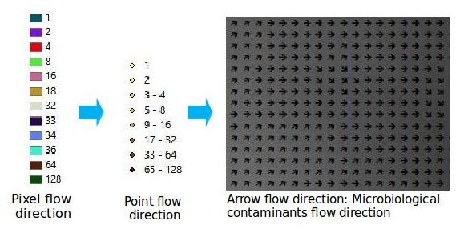
Figure 5: Spatial association of elevation, pit latrines, flow direction of microbiological contaminants and surface water sources
3. TO DEVELOP INTERACTIVE WEB GIS MAP IN CHOLERA OUTBREAK MANAGEMENT
The web GIS system has been developed based on open source applications will provide resourceful means for decision making in cholera outbreak management. The distributed web GIS allows for any user with internet connectivity to access the mapping services on the World Wide Web. The platform shows its potential in cholera information sharing to both GIS and non GIS health. The application is accessible through a generic web browser at: https://maxwell0401.github.io/CholeraSpatialEpidemiology. The User Interface (UI) contains tabs such home, gap, objective, results, map and downloads. On the extreme left the interface shows widgets such as zoom in, zoom out, zoom to extent and a tool for measuring distance and area. The top right of the interface shows spatial layer for cholera case, water source and pit latrine. By clicking the mark symbol on the right of each layer, the respective layer in the map window is removed. The interface has also cartographic elements such as legend and scale. The ‘LEGEND’ section shows the symbols and colors used in the map. Figure 1 shows the user interface for the developed web GIS.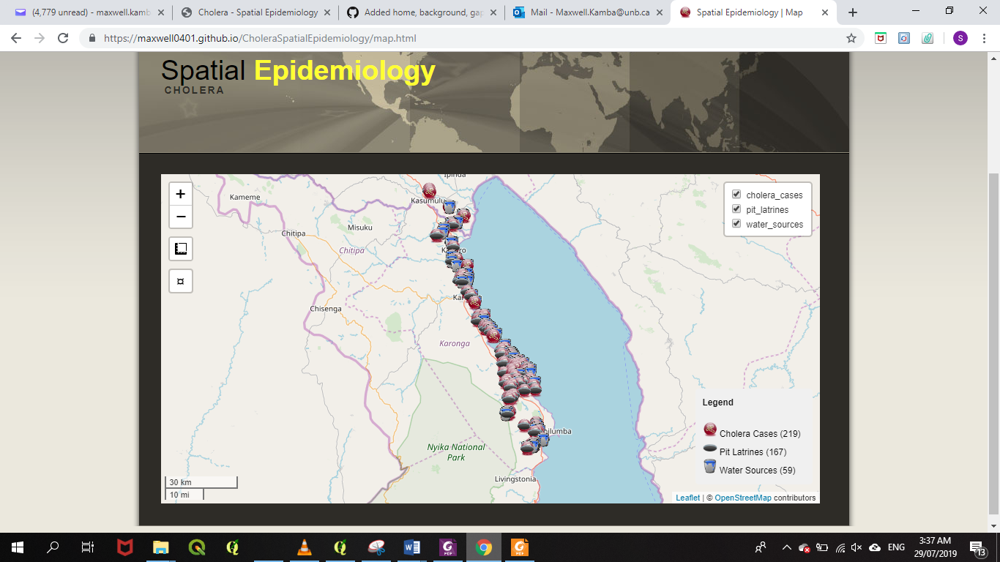
Figure 1: User Interface for the interactive web GIS (Desktop)
The developed web GIS interface allows users to download data and share it in different file formats such shape-file, KML, excel and others. The developed web GIS can be accessed remotely on a mobile device. Any mobile device can access it remotely as long as the device has internet connectivity; this is through the IP address. Users can access the application from mobile devices such as tablets and smartphones to access the same services just like those who are accessing the same from a personal computer or laptop. Figure 2 shows the interactive web GIS accessed using the mobile phone.
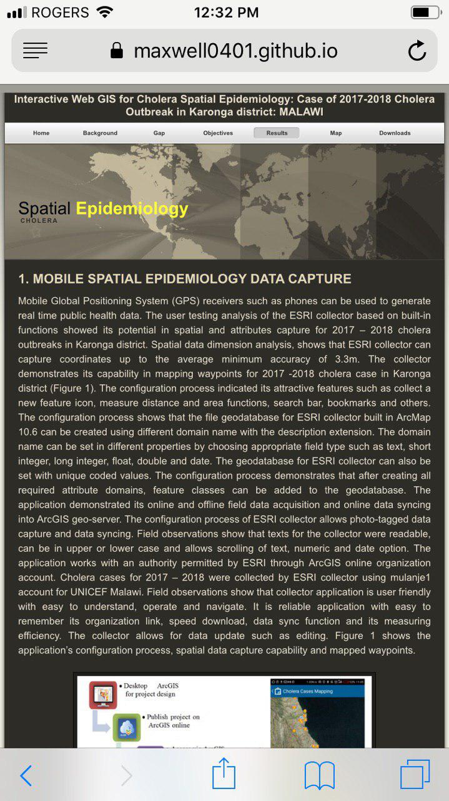
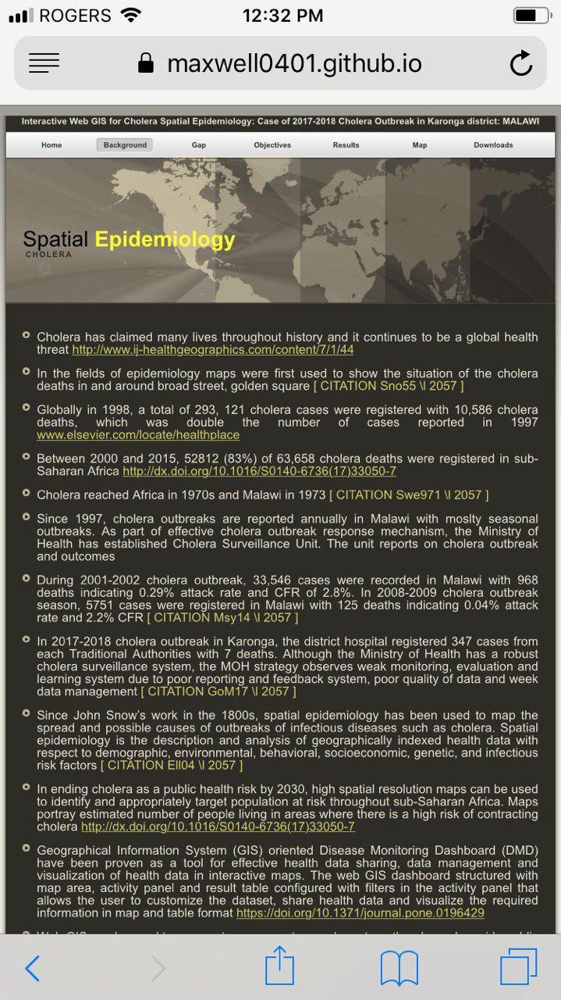
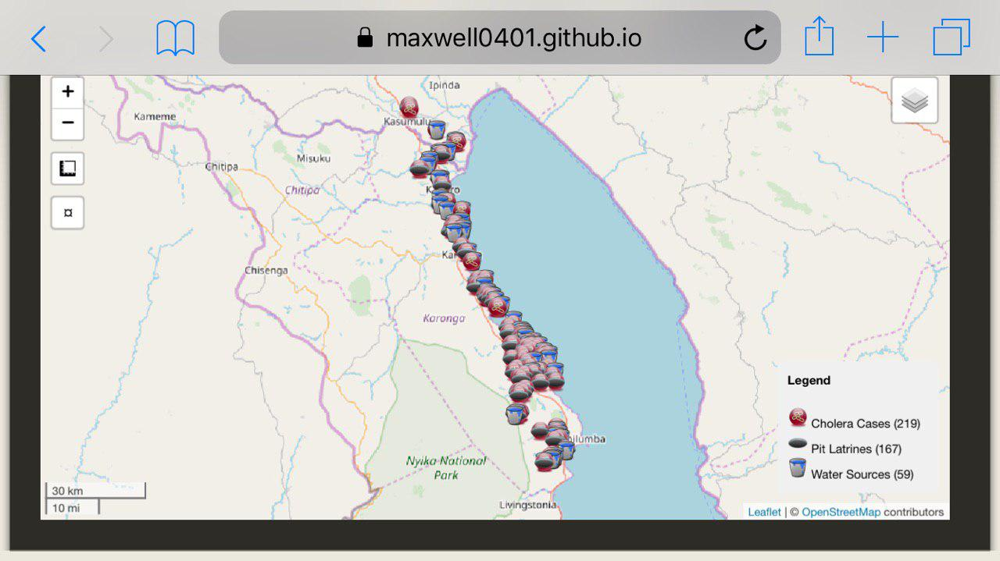
Figure 2: User Interface for the interactive web GIS (Mobile)
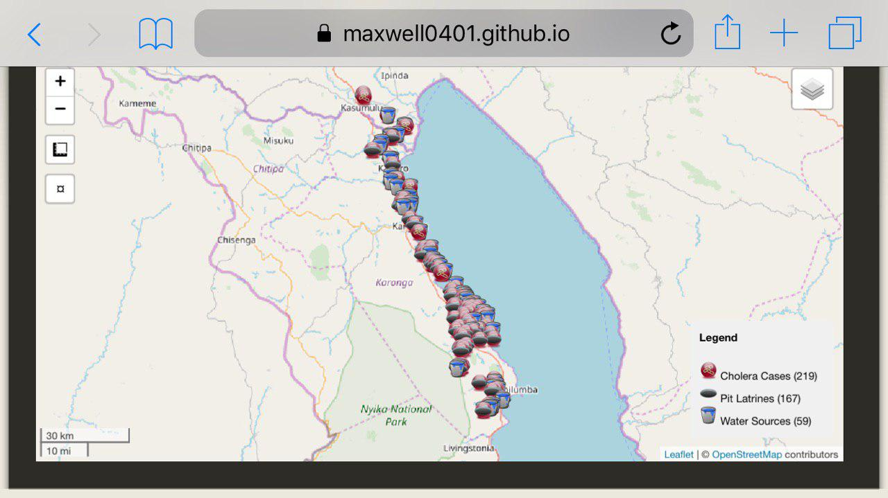
Figure 2: User Interface for the interactive web GIS (Mobile)
4. TO EVALUATE APPLICATION OF INTERACTIVE WEB GIS MAP IN CHOLERA OUTBREAK MANAGEMENT
Descriptive statistics based on measure of frequency was performed to evaluate the performance and satisfaction of interactive GIS map. System evaluation guided by three basic measurements; web structure, web content and web usage was conducted with representative from different stakeholders in Karonga district. Representatives from Karonga district Hospital, Organized Network of Services for Everyone’s Health (ONSE) organization, Karonga district disaster management office, Karonga district information office and University of Livingstonia were involved in evaluation of interactive GIS user interface.4.1. Web content dimension
Figure 1 shows evaluation results based on web content quality. The results show that 57.1% of evaluators realized the excellence of the web GIS product based on its relevant indicator in decision making for disease management. The descriptive statistics indicated that 42.9% of evaluators mentioned that the product is relevance in health information sharing, disease hotspot tracking and support proper resources allocation.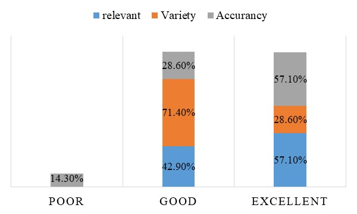
Figure 1: Web content quality
The evaluation results shows that 71.4% and 28.6% of evaluators mentioned that it is very good and excellent respectively for presenting interface in different forms of presenting the interactive GIS index. This gives an opportunity to the users to chose their best fit form of presentating the interface. Further more, the interactive GIS index can be hosted in the personal computer and in the free web server such GitHub. Figure 2 shows different forms of presenting interactive GIS.
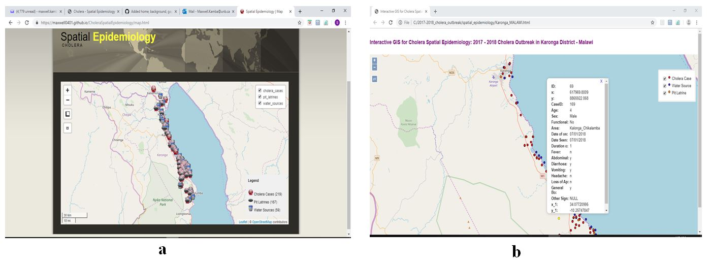
Figure 2: Interactive GIS presentation (a) web hosting server (GitHub), (b) hosted in personal computer
Interactive map shows its accuracy information with no spelling errors, precise overlaying of vector layers with open source baase map, provide accurate measuring results for area and distance. Figure 1 shows that 57.1% of evaluators indicate excellent in accuracy of the information for the developed interactive GIS map.
4.2. Design quality dimension
The design quality for interactive GIS map was measured based on attractive, appropriate, text and color. The majority (85.7%) of evaluators mentioned that the interface is very attractive to the users with its attractive widgets, innovative and aesthetic effects such as measuring tools, zoom options, interface layout and tabs for effective navigation. It was also indicated that the interface shows excellent appropriate in public health, health information sharing, decision making and with appropriate balancing of interface color and text. The analysis shows that 57.1% of evaluators found the interface text was consistency, readable, able in scrolling text and in relative size with good background and text color.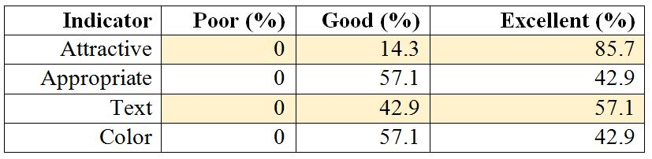
Table 1: Design quality evaluation results
4.3. Organization quality dimension
Figure 3 shows the general layout of the interactive GIS interface. The majority (57.1%) of evaluators indicated that the map has good interactive features such as pop-ups on hover, measuring tools and collapsed map layers. About 57.1% of the evaluators indicated that the map shows good cartographic features such legend and scale with excellent consistency map layout. The interactive GIS index allows for a good speed downloads of spatial layers in KMZ file format which can be converted in different file formats.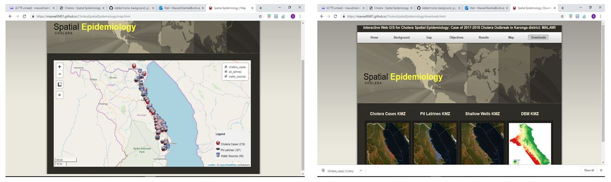
Figure 3: General layout of the interactive GIS map